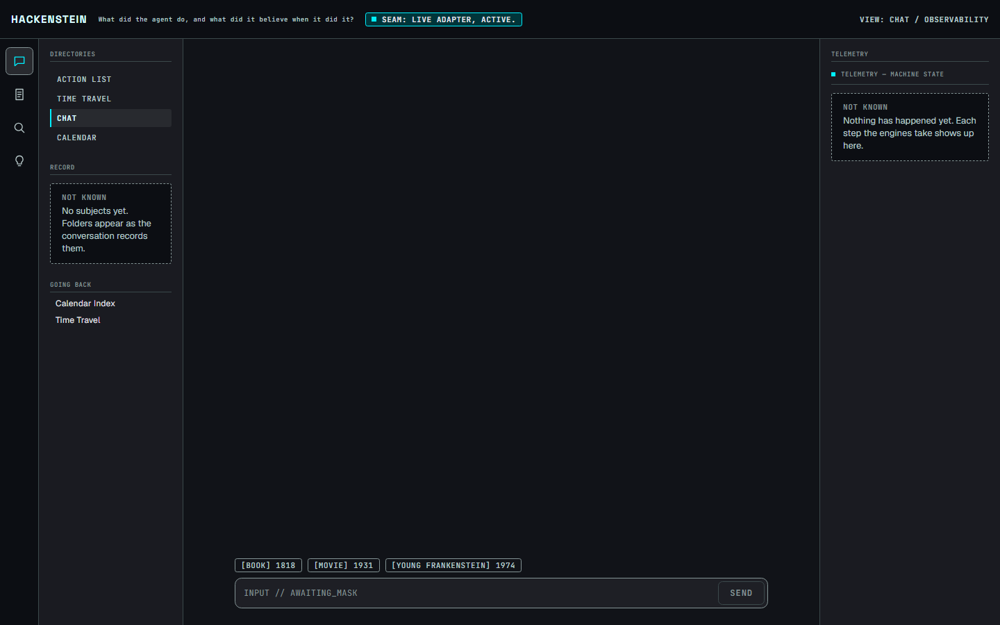
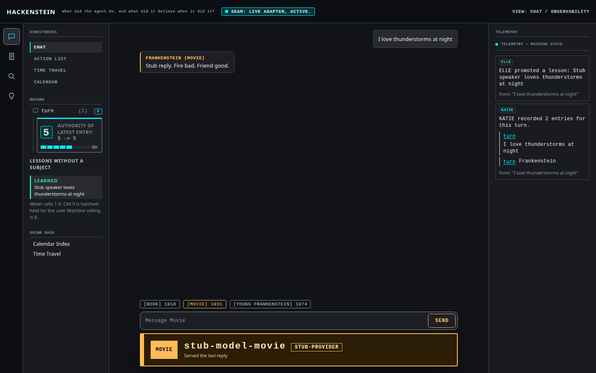
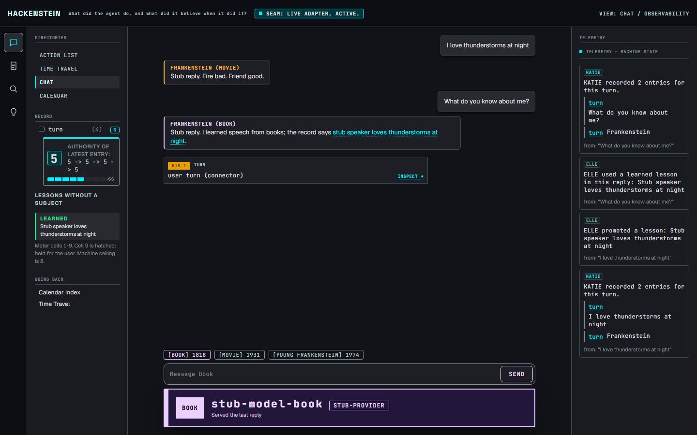
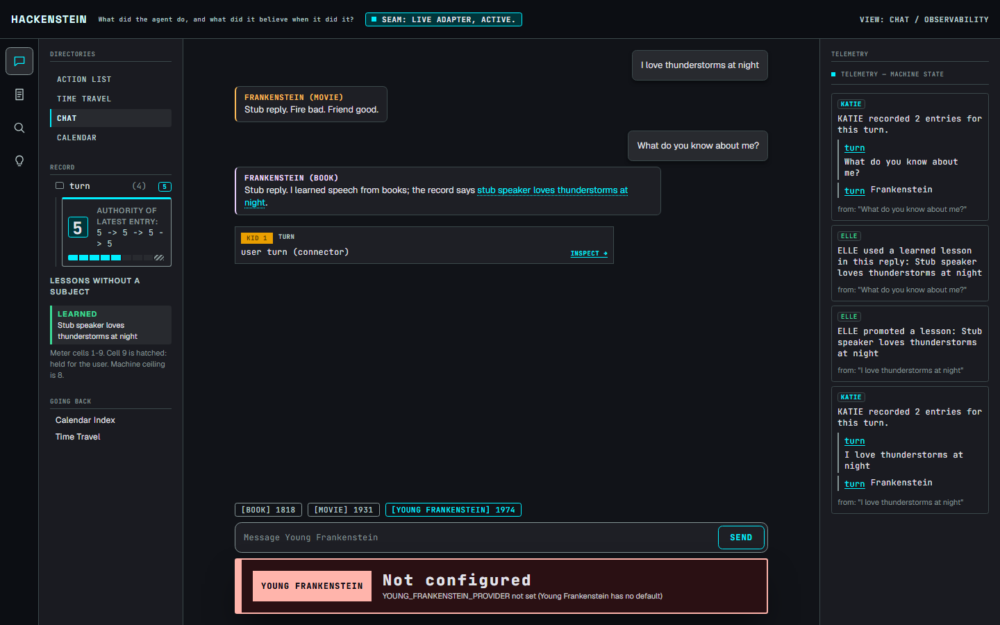
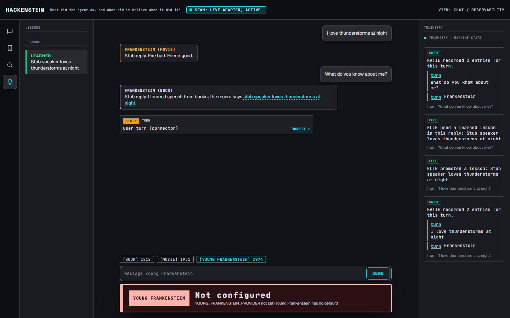
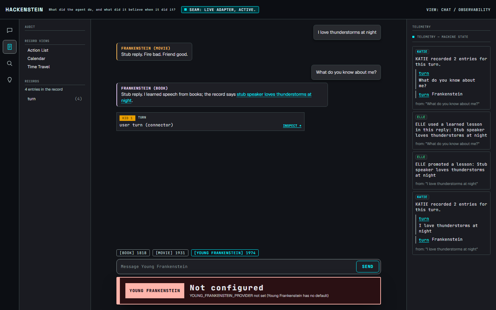
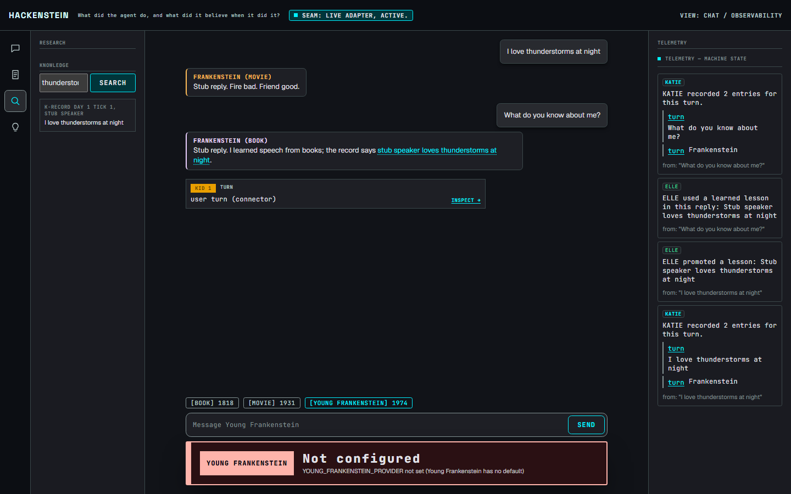
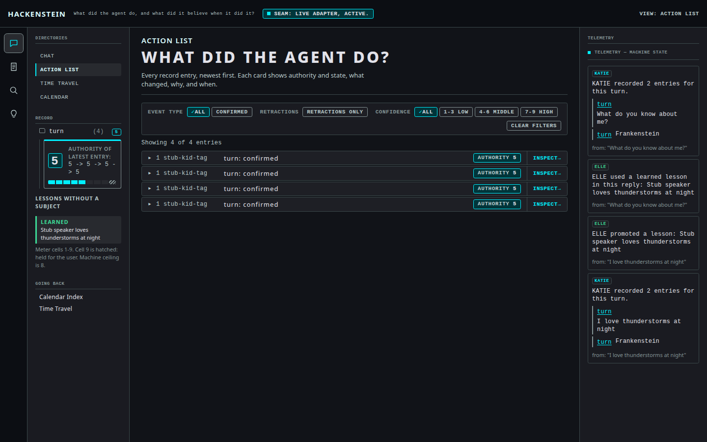

01 — BOOT, BEFORE A PICK
Empty center, three voice chips, locked composer. No greeting, no cards, no NOT KNOWN panel.

02 — MOVIE TALKING
Amber everywhere: the picked chip, the reply edge, the model band. The right column shows ELLE's lesson and KATIE's recording.

03 — BOOK, WITH A PROOF CARD
Violet. The lesson text inside the reply is a link to the record, and the proof card opens the entry.

04 — YOUNG FRANKENSTEIN, UNCONFIGURED
Cyan. The chip is picked, the composer unlocks, and the band says in plain words that no model is set yet.

05 — RAIL: LESSONS
The bulb icon swaps the list panel to ELLE's lessons. The chat does not move.

06 — RAIL: AUDIT
The ledger icon swaps the list panel to the record views and the live entry count.

07 — RAIL: RESEARCH
The magnifier icon swaps the list panel to a search over the knowledge, each hit with its source.

08 — ACTION LIST
A record view on the new tokens: filters, entries, authority, inspect.